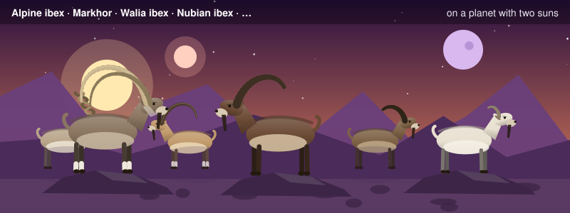
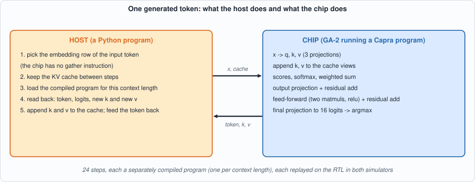
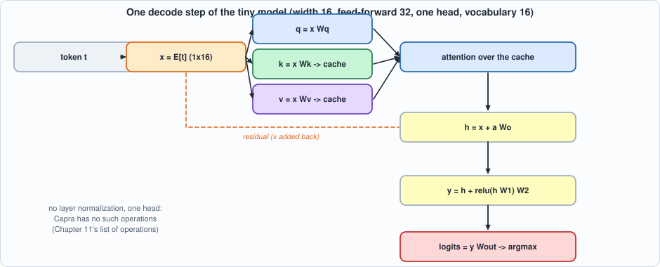
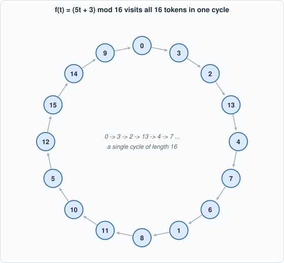
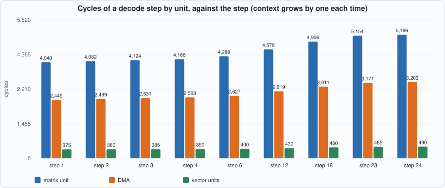
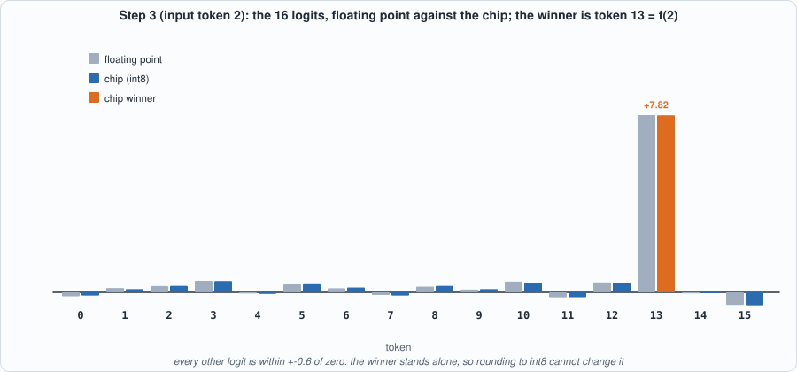
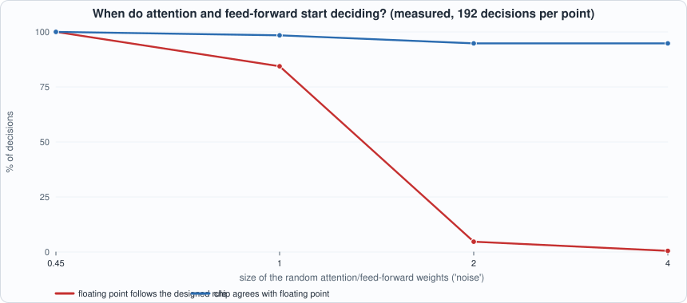

12. Capstone: A Tiny Transformer Decodes on the Chip¶

About the animals in this picture and where they are standing
- Alpine ibex (Capra ibex) lives in the European Alps, usually above the tree line on steep rock, and is a famously sure-footed climber. Males carry horns that can reach about a metre. Hunting left only a small remnant, around the Gran Paradiso in Italy, by the early 1800s; reintroductions have since restored it across the Alps.
- Markhor (Capra falconeri) lives in the mountains of Pakistan, Afghanistan and neighbouring regions. The males' horns twist in a corkscrew; the name is often explained as Persian for 'snake-eater'. It is Pakistan's national animal, and community-based conservation has helped some populations recover.
- Walia ibex (Capra walie) lives nowhere but the Simien Mountains of northern Ethiopia, on high cliffs. It is endangered, with only a few hundred animals remaining, and is protected within the Simien Mountains National Park.
- Nubian ibex (Capra nubiana) lives in the rocky, arid hills of north-east Africa and the Arabian Peninsula, from the Sinai and Egypt south to Sudan and Ethiopia. Its coat matches the desert rock, and the males' ridged horns sweep back like a sickle.
- Domestic goat (Capra hircus) descends from the bezoar ibex and is among the oldest domesticated animals. There are on the order of a billion of them, kept for milk, meat, fibre and as pack animals.
- West Caucasian tur (Capra caucasica) lives only in the western Caucasus, on steep slopes above the forest line. Its horns are short and heavy, curving outward and back, and it moves up and down cliffs with ease.
The scene is imaginary: it is set on an imaginary planet with two suns and a purple moon. The animals are stylised drawings, shown where they could not live, for effect.
What you will see: everything in this book working together. A one-layer transformer written as a floating-point graph is turned by the compiler of Chapter 11 into GA-2 programs; a host loop feeds each chosen token back and keeps the KV cache of Chapter 8; the programs run on the Verilog of Chapter 7 in two simulators; and the 24 tokens that come out are the ones floating point produces and the ones a formula predicts. Then the capstone is turned on the hardware as a test, and it shows what an end-to-end workload can and cannot tell you about a chip.
What you need to know first: Chapters 7-11. There is little new machinery here: this chapter is the assembly and the audit. Appendix E (transformers and LLM inference) describes the model that this chapter builds in miniature.
What this chapter builds: model/tiny_lm.py (the model, its floating-point reference, the graph builder and the host loop Chip), tools/ch12_run.py, tools/mut_ch12.py, and for the running examples tools/ch12_example_a.py and tools/ch12_example_b.py.
Why a capstone¶
Eleven chapters built and tested pieces. A reader should be allowed to ask whether the pieces work together, and the honest way to answer is a workload that exercises all of them: a language model that produces text, token after token, through the compiler, the instruction set, the scratchpad, the matrix, vector and softmax units, and the Verilog, in both simulators.
A language model here is a function from a token (a number from 0 to 15) to the next token, built from the operations of Chapter 8's attention step plus a feed-forward block, with the KV cache kept between steps. It generates by feeding its own output back as input, one token per step. Nothing about the loop is specific to this size: a model with billions of weights does the same thing with bigger matrices.
The capstone is deliberately designed to be checkable. Its weights are built so that the right next token is known in advance by a formula; then three independent routes (the formula, a floating-point implementation, and the chip) must agree, and a disagreement points at the pipeline, not at a vague question of whether the model is good.

Figure 12.1: the division of labour. The chip runs a compiled program per token; everything the instruction set has no instruction for (the embedding lookup, the cache) belongs to the host.The model, and what it is not¶
#!/usr/bin/env python3
"""Chapter 12: a tiny transformer language model and the host program that decodes with it on GA-2.
THE MODEL. vocabulary V = 16 tokens, width D = 16, feed-forward width 32, one layer, one attention head, no layer normalization (the compiler of Chapter 11 has no such operation).
x = embedding[token]
q, k, v = x Wq, x Wk, x Wv ; keys/values of all tokens so far = the KV cache (with the new k, v appended)
a = softmax(q K^T / sqrt(D)) V ; h = x + a Wo ; y = h + relu(h W1) W2 ; logits = y Wout ; next token = argmax logits
THE WEIGHTS ARE CONSTRUCTED, NOT TRAINED. The embeddings are the 16 orthogonal rows of a Hadamard matrix, and Wout is arranged so that the logit of token j is large when the input token is f^-1(j): the model's next token is
f(t) = (5 t + 3) mod 16, a permutation with one cycle of length 16. Attention and the feed-forward block are real (their weights are random and their outputs are added to the residual stream) but small, so they
perturb the logits instead of deciding them. What this tests is the whole PIPELINE (compiler, scales, KV cache, ISA, chip), not the model's quality. A second, generic model with random weights measures how often
the int8 chip picks the same token as floating point.
THE HOST. The host picks the embedding row (the chip has no gather instruction), keeps the KV cache between steps (appending the dequantized k and v the chip returns) and feeds the chosen token back.
"""
import math, os, random, sys
sys.path.insert(0, os.path.dirname(os.path.abspath(__file__)))
os.environ.setdefault("GA2_EXT", "8192")
import capra as C, ga2_isa as I
V = D = 16; HID = 32
def f_next(t): return (5 * t + 3) % 16
def hadamard(n):
h = [[1]]
while len(h) < n: h = [r + r for r in h] + [r + [-x for x in r] for r in h]
return h
def make_model(kind="structured", seed=1, noise=0.45):
R = random.Random(seed); g = lambda r, c, sd: [[R.gauss(0, sd) for _ in range(c)] for _ in range(r)]
if kind == "structured":
E = [[x / 4 for x in row] for row in hadamard(16)] # unit-norm, mutually orthogonal rows
finv = {f_next(t): t for t in range(V)}; Wout = [[8.0 * E[finv[j]][d] for j in range(V)] for d in range(D)]
s = noise
else:
E = [[x / 4 for x in r] for r in g(V, D, 1.0)]; Wout = g(D, V, 1 / math.sqrt(D)); s = 1.0
return {"kind": kind, "E": E, "Wq": g(D, D, s / math.sqrt(D)), "Wk": g(D, D, s / math.sqrt(D)), "Wv": g(D, D, s / math.sqrt(D)), "Wo": g(D, D, s / math.sqrt(D)),
"W1": g(D, HID, s / math.sqrt(D)), "W2": g(HID, D, s / math.sqrt(HID)), "Wout": Wout}
# ---------------------------------------------------------------- the floating-point reference, written without the graph IR
def mv(x, W): return [sum(x[i] * W[i][j] for i in range(len(x))) for j in range(len(W[0]))]
def float_step(m, tok, kc, vc):
x = m["E"][tok]; q, k, v = mv(x, m["Wq"]), mv(x, m["Wk"]), mv(x, m["Wv"]); K = kc + [k]; Vv = vc + [v]
sc = [sum(q[i] * Kr[i] for i in range(D)) / math.sqrt(D) for Kr in K]; mx = max(sc); e = [math.exp(s - mx) for s in sc]; z = sum(e)
a = [sum(e[p] / z * Vv[p][i] for p in range(len(K))) for i in range(D)]
h = [xi + oi for xi, oi in zip(x, mv(a, m["Wo"]))]; f2 = mv([max(0.0, t) for t in mv(h, m["W1"])], m["W2"]); y = [hi + fi for hi, fi in zip(h, f2)]
logits = mv(y, m["Wout"]); return logits, k, v, {"x": x, "o": mv(a, m["Wo"]), "f": f2}
def float_generate(m, start, n):
toks = [start]; kc, vc = [], []
for _ in range(n):
logits, k, v, _ = float_step(m, toks[-1], kc, vc); kc.append(k); vc.append(v); toks.append(logits.index(max(logits)))
return toks
# ---------------------------------------------------------------- the graph for one decode step with L tokens in context
def build_graph(m, L):
g = C.Graph(); x = g.tag(g.input("x", (1, D)), "x"); w = lambda nm: g.weight(nm, m[nm])
q = g.matmul(x, w("Wq")); k = g.tag(g.matmul(x, w("Wk")), "k"); v = g.tag(g.matmul(x, w("Wv")), "v")
if L > 1: K = g.tag(g.concat_rows(g.tag(g.input("kc", (L - 1, D)), "k"), k), "k"); Vv = g.tag(g.concat_rows(g.tag(g.input("vc", (L - 1, D)), "v"), v), "v")
else: K, Vv = k, v
p = g.softmax(g.matmul(q, K, transpose_b=True, scale=1 / math.sqrt(D))); a = g.matmul(p, Vv); h = g.add(x, g.matmul(a, w("Wo")))
y = g.add(h, g.matmul(g.relu(g.matmul(h, w("W1"))), w("W2"))); logits = g.matmul(y, w("Wout"))
g.output(g.argmax(logits), "tok"); g.output(logits, "logits"); g.output(k, "k_new"); g.output(v, "v_new"); return g
def calibrate(m, steps, starts=range(V)):
"""Run the float model from several starting tokens and record, for each context length, the inputs the chip will see; and the ranges of x, k and v over everything seen."""
calib = {L: [] for L in range(1, steps + 1)}; rk = rv = rx = 0.0
for s in starts:
toks = [s]; kc, vc = [], []
for L in range(1, steps + 1):
logits, k, v, _ = float_step(m, toks[-1], kc, vc)
calib[L].append({"x": [m["E"][toks[-1]]], **({"kc": [list(r) for r in kc], "vc": [list(r) for r in vc]} if L > 1 else {})})
rk = max(rk, max(abs(t) for t in k)); rv = max(rv, max(abs(t) for t in v)); rx = max(rx, max(abs(t) for t in m["E"][toks[-1]])); kc.append(k); vc.append(v); toks.append(logits.index(max(logits)))
return calib, {"x": rx, "k": rk, "v": rv}
class Chip:
"""The host's view: compiles each context length once, then decodes token by token on the reference simulator, recording each step's program and external memory so the RTL can replay them."""
def __init__(self, m, steps, starts=range(V)):
self.m = m; self.calib, self.ranges = calibrate(m, steps, starts); self.progs = {}
def program(self, L):
if L not in self.progs: self.progs[L] = C.compile_graph(build_graph(self.m, L), self.calib[L], ranges=self.ranges)
return self.progs[L]
def generate(self, start, n, force=None):
"""Decode n tokens from `start`. force: a list of tokens to feed instead of the chip's own choice (teacher forcing). Returns tokens, per-step records and per-step logits."""
toks = [start]; kc, vc = [], []; rec = []
for L in range(1, n + 1):
P = self.program(L); inp = {"x": [self.m["E"][toks[-1]]]}
if L > 1: inp["kc"] = [list(r) for r in kc]; inp["vc"] = [list(r) for r in vc]
out, mach = C.run(P, inp, machine=True)
rec.append({"L": L, "code": P.code, "ext": C.ext_image(P, inp), "logits": out["logits"][1][0], "tok": out["tok"][0][0][0]})
kc.append(out["k_new"][1][0]); vc.append(out["v_new"][1][0]); toks.append(force[L] if force else out["tok"][0][0][0])
return toks, rec
if __name__ == "__main__":
m = make_model("structured"); exp = [0]
for _ in range(24): exp.append(f_next(exp[-1]))
print("closed form:", exp); print("float :", float_generate(m, 0, 24)); chip = Chip(m, 24); t, _ = chip.generate(0, 24); print("chip (ref) :", t, t == exp)

Figure 12.2: the model's decode step. The dashed line is the residual connection that adds the input back.A decode step is: embed the token (the host picks the row; GA-2 has no gather instruction), project q, k, v, append k and v to the cache, attention over the whole cache, an output projection and a residual add, a two-layer feed-forward block and another residual add, a final projection to 16 logits, and argmax. That is a complete, if small, transformer block; it lacks layer normalization and GELU (the compiler has no such operations), uses one head, and has a 16-token vocabulary.

Figure 12.3: the designed rule. Starting at 0 the chain 0, 3, 2, 13, 4, 7, 6, 1, 8, 11, 10, 5, 12, 15, 14, 9 visits every token once and returns to 0. A permutation with a single cycle makes every step's answer different from its neighbours, so a bug that repeated or skipped a token would be seen.The weights are constructed, not trained. Training a model is outside this book. To give the run a checkable answer, the 16 embeddings are the orthogonal rows of a Hadamard matrix and the output projection is arranged so that the model's next token is f(t) = (5 t + 3) mod 16, a permutation with a single cycle of length 16. Attention and the feed-forward block have random weights and really run, but they are small: measured in floating point along this generation, the attention output has 7% of the norm of the embedding and the feed-forward output 14%. They perturb the logits by about 16% (switching both off changes the logits by that much, but not the chosen tokens); the embeddings decide the token. So this tests the pipeline, not the model: whether the compiler, the scales, the cache, the instructions and the chip compute what the graph says. A second, generic model with random weights (below) measures how faithful the int8 chip is when the answer is not designed.
Running it¶
#!/usr/bin/env python3
"""Chapter 12 (capstone): a tiny transformer decodes 24 tokens on GA-2, with every program produced by the compiler of Chapter 11. Usage: ch12_run.py"""
import math, os, random, re, sys
os.environ["GA2_EXT"] = "8192"
sys.path.insert(0, os.path.dirname(os.path.abspath(__file__))); sys.path.insert(0, os.path.join(os.path.dirname(os.path.abspath(__file__)), "..", "model"))
import hw, ga2_isa as I, ga2_progs as G, capra as C, tiny_lm as T
F = ["rtl/sram.v", "rtl/dma.v", "rtl/systolic.v", "rtl/requant.v", "rtl/exp_lut.v", "rtl/divu.v", "rtl/rowmem.v", "rtl/ga2_vec.v", "rtl/ga2_sm.v", "rtl/ga2_mm.v", "rtl/ga2.v", "tb/extmem_rw.v", "tb/ga2_tb.v"]
def line(out): return ([l for l in out.splitlines() if l.startswith(("PASS", "FAIL", "MISMATCH"))] or out.strip().splitlines()[-2:])[0]
N = 24; m = T.make_model("structured")
print("== 1. the same token sequence three ways (start token 0, 24 steps)")
exp = [0]
for _ in range(N): exp.append(T.f_next(exp[-1]))
fl = T.float_generate(m, 0, N); chip = T.Chip(m, N); toks, rec = chip.generate(0, N)
print("closed form f(t) = (5t+3) mod 16 :", exp); print("floating point :", fl); print("GA-2 (compiled programs) :", toks)
print("all three identical:", exp == fl == toks)
print("\n== 2. is the attention/feed-forward path real? (floating point, along this generation)")
kc, vc, tok = [], [], 0; ro, rf, gaps, shift = [], [], [], []
m0 = dict(m); m0["Wo"] = [[0.0] * T.D for _ in range(T.D)]; m0["W2"] = [[0.0] * T.D for _ in range(T.HID)]
for _ in range(N):
lg, k, v, aux = T.float_step(m, tok, kc, vc); lg0, _, _, _ = T.float_step(m0, tok, kc, vc); nx = lambda a: math.sqrt(sum(t * t for t in a))
ro.append(nx(aux["o"]) / nx(aux["x"])); rf.append(nx(aux["f"]) / nx(aux["x"])); s = sorted(lg, reverse=True); gaps.append((s[0] - s[1]) / (s[0] - s[-1]))
shift.append(nx([a - b for a, b in zip(lg, lg0)]) / nx(lg)); kc.append(k); vc.append(v); tok = lg.index(max(lg))
print(f"attention output / embedding (norm ratio): mean {sum(ro)/N:.2f}; feed-forward output / embedding: mean {sum(rf)/N:.2f}")
print(f"switching attention and feed-forward OFF changes the logits by {100*sum(shift)/N:.1f}% on average (but not the chosen tokens: they decide the logits' detail, the embeddings decide the token)")
print(f"gap between best and second-best logit, as a fraction of the logit range: min {min(gaps):.2f} mean {sum(gaps)/N:.2f} (a chip with ~1% quantization noise needs this well above 0.01)")
print("\n== 3. the 24 decode steps replayed on the RTL (the programs the compiler produced, with the external memory the host prepared)")
words = [len(rec)]
for r in rec: words += G.record(r["code"], r["ext"])
open(os.path.join(hw.ROOT, "out", "ga2_programs.hex"), "w").write("\n".join("%08x" % (w & 0xFFFFFFFF) for w in words) + "\n")
res = {}
for name, fn in (("Icarus", hw.sim_icarus), ("Verilator", hw.sim_verilator)):
rc, out = fn(F, "ga2_tb", defines=("EXTW=8192", "DUMP")); print(f" {name:10s}{line(out)} (exit {rc})")
for mm in re.finditer(r"COUNTERS (\d+) (\d+) (\d+) (\d+) (\d+) (\d+)", out): res[int(mm.group(1))] = [int(q) for q in mm.groups()[1:]]
print(f"\n{'step':>4s} {'context':>8s} {'instr':>6s} {'cycles':>7s} {'matrix':>7s} {'DMA':>6s} {'vector':>7s} token")
for i, r in enumerate(rec):
tot, mm_, dma, vec, n = res[i]
if i < 4 or i >= N - 2 or i % 6 == 5: print(f"{i+1:4d} {r['L']:8d} {n:6d} {tot:7d} {mm_:7d} {dma:6d} {vec:7d} {toks[i]} -> {toks[i+1]}")
total = sum(res[i][0] for i in range(N))
print(f"\n24 tokens: {total} cycles in all, {total/N:.0f} per token on average (first step {res[0][0]}, last {res[N-1][0]}).")
print(f"At the 10.47 ns critical path of Chapter 10's toy-library timing (96 MHz) that would be {96e6/(total/N):.0f} tokens per second -- a toy-library, no-memory-timing figure, quoted only to show the order of magnitude.")
print("\n== 4. a generic model: random weights, random embeddings (so the answer is not designed). Teacher-forced: both systems see the same tokens; how often does the chip pick the token floating point picks?")
agree = tot_steps = 0; errs = []
for seed in (1, 2, 3):
mg = T.make_model("random", seed=seed); ch = T.Chip(mg, 12)
for s in range(T.V):
ft = T.float_generate(mg, s, 12); ctoks, crec = ch.generate(s, 12, force=ft)
kc, vc = [], []
for L in range(1, 13):
lg, k, v, _ = T.float_step(mg, ft[L - 1], kc, vc); kc.append(k); vc.append(v); agree += (crec[L - 1]["tok"] == lg.index(max(lg))); tot_steps += 1
num = math.sqrt(sum((a - b) ** 2 for a, b in zip(crec[L - 1]["logits"], lg))); den = math.sqrt(sum(b * b for b in lg)); errs.append(num / den)
print(f"3 models x 16 start tokens x 12 steps = {tot_steps} decisions: the chip agrees with floating point on {agree} ({100*agree/tot_steps:.1f}%); relative logit error: mean {100*sum(errs)/len(errs):.1f}%, worst {100*max(errs):.1f}%")
Output (cloud sandbox -- live-executed; Icarus Verilog 12.0, Verilator 5.020)
== 1. the same token sequence three ways (start token 0, 24 steps)
closed form f(t) = (5t+3) mod 16 : [0, 3, 2, 13, 4, 7, 6, 1, 8, 11, 10, 5, 12, 15, 14, 9, 0, 3, 2, 13, 4, 7, 6, 1, 8]
floating point : [0, 3, 2, 13, 4, 7, 6, 1, 8, 11, 10, 5, 12, 15, 14, 9, 0, 3, 2, 13, 4, 7, 6, 1, 8]
GA-2 (compiled programs) : [0, 3, 2, 13, 4, 7, 6, 1, 8, 11, 10, 5, 12, 15, 14, 9, 0, 3, 2, 13, 4, 7, 6, 1, 8]
all three identical: True
== 2. is the attention/feed-forward path real? (floating point, along this generation)
attention output / embedding (norm ratio): mean 0.07; feed-forward output / embedding: mean 0.14
switching attention and feed-forward OFF changes the logits by 16.1% on average (but not the chosen tokens: they decide the logits' detail, the embeddings decide the token)
gap between best and second-best logit, as a fraction of the logit range: min 0.81 mean 0.87 (a chip with ~1% quantization noise needs this well above 0.01)
== 3. the 24 decode steps replayed on the RTL (the programs the compiler produced, with the external memory the host prepared)
Icarus PASS: 24 programs match the Python reference (memory and all five cycle counters), 192710 cycles in total (exit status 0) (exit 0)
Verilator PASS: 24 programs match the Python reference (memory and all five cycle counters), 192710 cycles in total (exit status 0) (exit 0)
step context instr cycles matrix DMA vector token
1 1 67 7000 4040 2449 375 0 -> 3
2 2 69 7101 4082 2499 380 3 -> 2
3 3 69 7180 4124 2531 385 2 -> 13
4 4 69 7259 4166 2563 390 13 -> 4
6 6 70 7457 4288 2627 400 7 -> 6
12 12 71 7971 4578 2819 430 5 -> 12
18 18 73 8525 4906 3011 460 3 -> 2
23 23 74 8960 5154 3171 485 6 -> 1
24 24 74 9039 5196 3203 490 1 -> 8
24 tokens: 192710 cycles in all, 8030 per token on average (first step 7000, last 9039).
At the 10.47 ns critical path of Chapter 10's toy-library timing (96 MHz) that would be 11956 tokens per second -- a toy-library, no-memory-timing figure, quoted only to show the order of magnitude.
== 4. a generic model: random weights, random embeddings (so the answer is not designed). Teacher-forced: both systems see the same tokens; how often does the chip pick the token floating point picks?
3 models x 16 start tokens x 12 steps = 576 decisions: the chip agrees with floating point on 559 (97.0%); relative logit error: mean 2.3%, worst 6.1%
Reading it¶
- Three ways to the same 24 tokens. The formula, the floating-point model (written without the graph IR) and the compiled programs on the reference simulator all produce
0, 3, 2, 13, 4, 7, 6, 1, 8, 11, 10, 5, 12, 15, 14, 9, 0, 3, ...: the cycle of the permutation, twice around. -
The 24 programs run on the RTL, in both simulators, with exactly the memory contents and cycle counters of the reference. The chip decodes the tokens the host chose.

Figure 12.4 (measured on the circuit): cycles by unit for selected steps. Every bar grows with the context, but the matrix unit's 4,040 cycles at step 1 are mostly the projections and feed-forward, which do not depend on the context. -
The cost of a token. A step takes 7,000 cycles with a one-token context and 9,039 with 24. Most of the cost does not depend on the context: 7,000 of 9,039 cycles are the projections and feed-forward matrices, whose weights (2,304 words in all) are re-read from external memory on every token. Only about 2,000 cycles are the cache and the attention. This is Chapter 9's lesson in a running model: at batch 1 a decode step is dominated by reading the weights again.
- The margin is wide in this model, which is why it works: the best logit exceeds the second best by 81% or more of the full logit range, against quantization noise of 1-3%.
- A generic model. With random weights and random embeddings (so there is no designed answer), the chip picks the same token as floating point on 559 of 576 decisions (97.0%) when both are given the same tokens, with a relative logit error of 2.3% on average and 6.1% at worst. Roughly 3% of decisions flip where two logits are within the noise. That is the honest accuracy of per-tensor int8 on this architecture and these data; a trained model's tolerance would have to be measured.
- The clock-rate caveat. At the toy-library timing of Chapter 10 (96 MHz, a 10.47 ns critical path) the average cycle count would be about 11,950 tokens per second. That number is the arithmetic of two toy quantities (a made-up library and no memory timing), and should not be quoted as speed. It is here to say that the whole stack, from a graph to cycles, is connected.
Running example A: watch the model decode, step by step¶
The point of this example: the totals in "Reading it" are summaries. This example prints eight decode steps one at a time, and one step in full: the 16 logits (the model's score for each possible next token) as the chip computed them next to what floating point computes, and how far the winner stands above the field.
#!/usr/bin/env python3
"""Chapter 12, running example A: watch the model think. Eight decode steps of the tiny transformer on the chip (reference simulator running the compiler's programs), one at a time: which token goes in, which token comes out, the 16 logits the chip computed next to the floating-point logits, and the margin between the winner and the runner-up. Writes out/ch12_example_a.json. Usage: ch12_example_a.py"""
import json, math, os, sys
os.environ["GA2_EXT"] = "8192"
sys.path.insert(0, os.path.dirname(os.path.abspath(__file__))); import hw
sys.path.insert(0, os.path.join(hw.ROOT, "model")); import tiny_lm as T, ga2_isa as I
N = 8; m = T.make_model("structured"); chip = T.Chip(m, N); toks, rec = chip.generate(0, N)
print(f"model: {T.V} tokens, width {T.D}, feed-forward {T.HID}, one layer, one head. The designed rule is f(t) = (5t + 3) mod 16.")
print("the weights are constructed so that rule holds; attention and the feed-forward block run for real but are small (Chapter 12 text).\n")
kc, vc, tok = [], [], 0; out = {"steps": []}
print("step context in -> out float winner gap (best - 2nd, as % of logit range) logits (chip, as int8 x scale): top three")
for L in range(1, N + 1):
lg, k, v, aux = T.float_step(m, tok, kc, vc); kc.append(k); vc.append(v); chip_lg = rec[L - 1]["logits"]
fw = lg.index(max(lg)); cw = chip_lg.index(max(chip_lg)); s = sorted(lg, reverse=True); gap = (s[0] - s[1]) / (s[0] - s[-1])
top = sorted(range(T.V), key=lambda j: -chip_lg[j])[:3]
print(f"{L:4d} {L:7d} {tok:2d} -> {cw:2d} {fw:2d} {100*gap:5.1f}% " + ", ".join(f"tok {j}: {chip_lg[j]:+.2f}" for j in top))
out["steps"].append({"L": L, "in": tok, "chip": chip_lg, "float": lg, "winner": cw}); tok = fw
print("\none step in detail (step 3): the 16 logits, chip against floating point (a logit is the model's score for each possible next token)")
st = out["steps"][2]
for j in range(T.V): print(f" token {j:2d} float {st['float'][j]:+7.3f} chip {st['chip'][j]:+7.3f} diff {st['chip'][j]-st['float'][j]:+6.3f}" + (" <- winner" if j == st["winner"] else ""))
print(f"\nthe winner ({st['winner']}) is the token the rule says follows {st['in']}: f({st['in']}) = {(5*st['in']+3) % 16}.")
print(f"the largest chip-vs-float difference on any logit at this step is {max(abs(a-b) for a, b in zip(st['chip'], st['float'])):.3f}, against a winning margin of {sorted(st['float'], reverse=True)[0]-sorted(st['float'], reverse=True)[1]:.2f}: the margin is what makes int8 safe here.")
print("\nwhat the host did at each step (the chip has no instruction for these): picked the embedding row of the input token, kept the KV cache in its own memory between steps, fed the chosen token back.")
json.dump(out, open(os.path.join(hw.ROOT, "out", "ch12_example_a.json"), "w"))
To compile and run: python3 tools/ch12_example_a.py (pure Python and the reference simulator; a few seconds).
Output (cloud sandbox -- live-executed)
model: 16 tokens, width 16, feed-forward 32, one layer, one head. The designed rule is f(t) = (5t + 3) mod 16.
the weights are constructed so that rule holds; attention and the feed-forward block run for real but are small (Chapter 12 text).
step context in -> out float winner gap (best - 2nd, as % of logit range) logits (chip, as int8 x scale): top three
1 1 0 -> 3 3 81.2% tok 3: +9.08, tok 14: +1.36, tok 8: +1.00
2 2 3 -> 2 2 83.4% tok 2: +7.47, tok 3: +1.01, tok 8: +0.93
3 3 2 -> 13 13 87.3% tok 13: +7.82, tok 3: +0.50, tok 10: +0.43
4 4 13 -> 4 4 87.5% tok 4: +8.01, tok 5: +0.63, tok 9: +0.49
5 5 4 -> 7 7 86.6% tok 7: +7.34, tok 1: +0.69, tok 3: +0.35
6 6 7 -> 6 6 89.7% tok 6: +7.89, tok 1: +0.49, tok 3: +0.35
7 7 6 -> 1 1 88.4% tok 1: +8.31, tok 12: +0.35, tok 15: +0.21
8 8 1 -> 8 8 83.9% tok 8: +8.01, tok 11: +0.56, tok 6: +0.28
one step in detail (step 3): the 16 logits, chip against floating point (a logit is the model's score for each possible next token)
token 0 float -0.178 chip -0.143 diff +0.034
token 1 float +0.192 chip +0.143 diff -0.048
token 2 float +0.278 chip +0.287 diff +0.009
token 3 float +0.508 chip +0.502 diff -0.006
token 4 float -0.051 chip -0.072 diff -0.021
token 5 float +0.354 chip +0.359 diff +0.005
token 6 float +0.181 chip +0.215 diff +0.034
token 7 float -0.116 chip -0.143 diff -0.027
token 8 float +0.253 chip +0.287 diff +0.034
token 9 float +0.120 chip +0.143 diff +0.023
token 10 float +0.472 chip +0.430 diff -0.042
token 11 float -0.222 chip -0.215 diff +0.007
token 12 float +0.439 chip +0.430 diff -0.008
token 13 float +7.827 chip +7.818 diff -0.009 <- winner
token 14 float -0.049 chip +0.000 diff +0.049
token 15 float -0.554 chip -0.574 diff -0.020
the winner (13) is the token the rule says follows 2: f(2) = 13.
the largest chip-vs-float difference on any logit at this step is 0.049, against a winning margin of 7.32: the margin is what makes int8 safe here.
what the host did at each step (the chip has no instruction for these): picked the embedding row of the input token, kept the KV cache in its own memory between steps, fed the chosen token back.

Figure 12.5 (measured): the logits at step 3. The winner, token 13, is at +7.8; every other logit is within 0.6 of zero.Walkthrough.
- The table. Each row is one step. The input token goes in; the chip's winner comes out; floating point's winner is the same; the gap between the best and the second-best logit is 81% to 90% of the whole range of logits. For an int8 chip with 1-3% rounding noise a 5% gap would already be safe; this is wide.
- The three biggest logits per step. The winner is around +7.3 to +9.1; the runners-up are at +0.2 to +1.4. The attention and feed-forward blocks do contribute (they give the small, structured differences among the losers) but the embeddings and the output matrix decide the winner.
- One step in detail. At step 3 the input is token 2, and the rule says f(2) = 13. Token 13 scores +7.82 on the chip and +7.83 in floating point. The other fifteen logits differ between chip and floating point by up to 0.05 (rounding of int8), and none of them comes near the winner.
- What the host did. At each step the host looked up the embedding row for the input token, kept the KV cache in its own memory (the chip returned the new k and v and the host appended them), and fed the chosen token back. This is the structure of every LLM server in miniature.
Running example B: change the rule, and find where the design stops being "designed"¶
The point of this example: two questions about the capstone. First, is it really the weights that carry the rule, so that a different rule needs only different weights and the same compiler and chip? Second, how big can the "real" parts of the model (attention and the feed-forward block) be before the designed answer stops being the answer? The second tells you how much to trust the capstone as a test.
#!/usr/bin/env python3
"""Chapter 12, running example B: retarget the model, and find where the designed answer stops being designed. (1) Build the same constructed model with a DIFFERENT next-token rule, f(t) = (3t + 7) mod 16, compile it with Capra unchanged and decode on the chip: the chip follows the new rule. (2) Increase the weights of attention and the feed-forward block (the `noise` knob) until they stop being small, and measure, for each level, how often floating point still follows the rule and how often the int8 chip still agrees with floating point (teacher-forced: both see the same tokens). Writes out/ch12_example_b.json. Usage: ch12_example_b.py"""
import json, math, os, random, sys
os.environ["GA2_EXT"] = "8192"
sys.path.insert(0, os.path.dirname(os.path.abspath(__file__))); import hw
sys.path.insert(0, os.path.join(hw.ROOT, "model")); import tiny_lm as T
def make_custom(f, noise, seed=1):
"""Like T.make_model('structured') but with an arbitrary permutation f and an adjustable size (`noise`) of the attention and feed-forward weights."""
R = random.Random(seed); g = lambda r, c, sd: [[R.gauss(0, sd) for _ in range(c)] for _ in range(r)]
E = [[x / 4 for x in row] for row in T.hadamard(16)]; finv = {f(t): t for t in range(T.V)}; Wout = [[8.0 * E[finv[j]][d] for j in range(T.V)] for d in range(T.D)]; s = noise
return {"kind": "custom", "E": E, "Wq": g(T.D, T.D, s / math.sqrt(T.D)), "Wk": g(T.D, T.D, s / math.sqrt(T.D)), "Wv": g(T.D, T.D, s / math.sqrt(T.D)), "Wo": g(T.D, T.D, s / math.sqrt(T.D)), "W1": g(T.D, T.HID, s / math.sqrt(T.D)), "W2": g(T.HID, T.D, s / math.sqrt(T.HID)), "Wout": Wout}
f2 = lambda t: (3 * t + 7) % 16
assert sorted(f2(t) for t in range(16)) == list(range(16))
print("== 1. a different rule: f(t) = (3t + 7) mod 16 (a permutation: 3 is odd, so it is invertible mod 16). Same compiler, same chip, new weights.")
m = make_custom(f2, 0.45); chip = T.Chip(m, 16); toks, _ = chip.generate(0, 16); exp = [0]
for _ in range(16): exp.append(f2(exp[-1]))
print("closed form :", exp); print("floating :", T.float_generate(m, 0, 16)); print("chip (ref) :", toks, " all equal:", exp == T.float_generate(m, 0, 16) == toks)
print("\n== 2. how big can the attention and feed-forward weights get before they decide the token? (16 start tokens x 12 steps, teacher-forced on floating point's own tokens; 192 decisions per row)")
print(" noise float follows the rule chip agrees with float mean logit error worst logit error")
res = {"noise": [], "float_rule": [], "chip_float": [], "err": []}
for noise in (0.45, 1.0, 2.0, 4.0):
m = make_custom(lambda t: (5 * t + 3) % 16, noise); ch = T.Chip(m, 12); fr = ca = tot = 0; errs = []
for s in range(T.V):
ft = T.float_generate(m, s, 12); fr += sum(ft[i + 1] == (5 * ft[i] + 3) % 16 for i in range(12)); ctoks, crec = ch.generate(s, 12, force=ft); kc, vc = [], []
for L in range(1, 13):
lg, k, v, _ = T.float_step(m, ft[L - 1], kc, vc); kc.append(k); vc.append(v); ca += crec[L - 1]["tok"] == lg.index(max(lg)); tot += 1
errs.append(math.sqrt(sum((a - b) ** 2 for a, b in zip(crec[L - 1]["logits"], lg))) / math.sqrt(sum(b * b for b in lg)))
res["noise"].append(noise); res["float_rule"].append(fr / tot); res["chip_float"].append(ca / tot); res["err"].append(sum(errs) / len(errs))
print(f"{noise:6.2f} {100*fr/tot:15.1f}% {100*ca/tot:21.1f}% {100*sum(errs)/len(errs):14.1f}% {100*max(errs):14.1f}%")
print("\nreading it: at noise 0.45 (the book's model) the embeddings decide everything: floating point follows the rule on every step and the chip agrees. As the random attention/feed-forward weights grow,")
print("they start to decide the token, floating point no longer follows the designed rule (the model is no longer 'designed'), and the chip's int8 arithmetic agrees with floating point less often because the logit margins shrink.")
json.dump(res, open(os.path.join(hw.ROOT, "out", "ch12_example_b.json"), "w"))
To compile and run: python3 tools/ch12_example_b.py (about four seconds).
Output (cloud sandbox -- live-executed)
== 1. a different rule: f(t) = (3t + 7) mod 16 (a permutation: 3 is odd, so it is invertible mod 16). Same compiler, same chip, new weights.
closed form : [0, 7, 12, 11, 8, 15, 4, 3, 0, 7, 12, 11, 8, 15, 4, 3, 0]
floating : [0, 7, 12, 11, 8, 15, 4, 3, 0, 7, 12, 11, 8, 15, 4, 3, 0]
chip (ref) : [0, 7, 12, 11, 8, 15, 4, 3, 0, 7, 12, 11, 8, 15, 4, 3, 0] all equal: True
== 2. how big can the attention and feed-forward weights get before they decide the token? (16 start tokens x 12 steps, teacher-forced on floating point's own tokens; 192 decisions per row)
noise float follows the rule chip agrees with float mean logit error worst logit error
0.45 100.0% 100.0% 1.2% 1.7%
1.00 84.4% 98.4% 2.1% 3.7%
2.00 4.7% 94.8% 2.8% 7.7%
4.00 0.5% 94.8% 3.4% 7.7%
reading it: at noise 0.45 (the book's model) the embeddings decide everything: floating point follows the rule on every step and the chip agrees. As the random attention/feed-forward weights grow,
they start to decide the token, floating point no longer follows the designed rule (the model is no longer 'designed'), and the chip's int8 arithmetic agrees with floating point less often because the logit margins shrink.

Figure 12.6 (measured, 192 decisions per point): as the random weights grow, the model stops following the designed rule (red) while the chip stays close to floating point (blue).Walkthrough.
- A new rule. Part 1 changes the rule to f(t) = (3t + 7) mod 16 (a permutation because 3 is odd, hence invertible modulo 16). Only the weights change: the embeddings and the output matrix. The same Capra compiler and the same chip decode the new cycle (0, 7, 12, 11, 8, 15, 4, 3, then back to 0) exactly as the formula and floating point do.
- The noise knob. The attention and feed-forward weights are random with a size set by
noise. At the book's setting (0.45) floating point follows the designed rule on 100% of the steps and the chip agrees with floating point on 100%. - When they take over. At noise 1.0 floating point still follows the rule 84% of the time; at noise 2.0, only 5%; at 4.0, 0.5%. The random parts now decide the tokens and the "designed" answer no longer exists.
- The chip stays close. Even then the chip agrees with floating point on 95% of decisions, with a logit error of about 3%. When the answer is not designed to be obvious, the int8 chip follows floating point except where two logits are nearly tied, which is the 97% figure of the generic model above.
- The lesson for using this test. The capstone checks the pipeline because its answer is dominated by the embeddings. It would be a weaker check with a larger noise (the formula would no longer give the answer), and the comparison would fall back on floating point alone. Part 2 shows the comparison with floating point is still what the chip passes, to about 95%.
The capstone as a test of the hardware¶
Chapter 7's 78 purpose-built programs caught all 49 hardware mutants. How many does the capstone catch? The 24 decode steps (programs from the compiler) were replayed on each broken chip, for the designed model and for a random-weights model:
#!/usr/bin/env python3
"""Chapter 12: how good a hardware test is the capstone workload? Run the 49 hardware mutants of Chapter 7 against the 24 decode steps of the tiny transformer (programs from the compiler, replayed on the RTL) instead of
against the 78 purpose-built test programs. 'caught' = the testbench's comparison of memory and cycle counters fails."""
import os, sys
os.environ["GA2_EXT"] = "8192"
sys.path.insert(0, os.path.dirname(os.path.abspath(__file__))); sys.path.insert(0, os.path.join(os.path.dirname(os.path.abspath(__file__)), "..", "model"))
import hw, ga2_progs as G, tiny_lm as T, mut_ch07 as M7
def workload(kind):
m = T.make_model(kind, seed=2); chip = T.Chip(m, 24); toks, rec = chip.generate(0, 24); words = [len(rec)]
for r in rec: words += G.record(r["code"], r["ext"])
open(os.path.join(hw.ROOT, "out", "ga2_programs.hex"), "w").write("\n".join("%08x" % (w & 0xFFFFFFFF) for w in words) + "\n")
print("NOTE: this script deliberately breaks copies of the RTL. 'caught' is EXPECTED: it shows the workload notices the mistake.")
caught = {}
for kind in ("structured", "random"):
workload(kind); c, n, lines = hw.mutate(M7.MUT, M7.F, "ga2_tb", M7.TB, workers=6, defines=("EXTW=8192",))
caught[kind] = {l.rsplit(": ", 1)[0] for l in lines if l.endswith(": caught")}
print(f"\n{kind} model, 24 decode steps: {c} of {n} hardware mutants caught (the 78 purpose-built programs of Chapter 7 caught all {n})")
print(" missed: " + "; ".join(sorted(l.rsplit(": ", 1)[0] for l in lines if l.endswith("NOT CAUGHT"))))
both = caught["structured"] | caught["random"]; print(f"\nby either workload: {len(both)} of {len(M7.MUT)}")
print("missed by both: " + ("; ".join(sorted(m[1] for m in M7.MUT if m[1] not in both)) or "none"))
NOTE: this script deliberately breaks copies of the RTL. 'caught' is EXPECTED: it shows the workload notices the mistake.
structured model, 24 decode steps: 38 of 49 hardware mutants caught (the 78 purpose-built programs of Chapter 7 caught all 49)
missed: AMAX: returns the last maximum, not the first; MM: A's row step uses K instead of lda; MM: C's row step uses N instead of ldc; MM: K is a 6-bit field; MM: M is a 2-bit field; SM: the maximum starts at 0, not -128; SM: the output is written in every pass; VADD: no clamp at all; VADD: the length field is 8 bits wide; VADD: the lower clamp is -128; VADD: the upper clamp is 126
random model, 24 decode steps: 39 of 49 hardware mutants caught (the 78 purpose-built programs of Chapter 7 caught all 49)
missed: MM: A's row step uses K instead of lda; MM: C's row step uses N instead of ldc; MM: K is a 6-bit field; MM: M is a 2-bit field; SM: the maximum starts at 0, not -128; SM: the output is written in every pass; VADD: no clamp at all; VADD: the length field is 8 bits wide; VADD: the lower clamp is -128; VADD: the upper clamp is 126
by either workload: 39 of 49
missed by both: MM: A's row step uses K instead of lda; MM: C's row step uses N instead of ldc; MM: K is a 6-bit field; MM: M is a 2-bit field; SM: the maximum starts at 0, not -128; SM: the output is written in every pass; VADD: no clamp at all; VADD: the length field is 8 bits wide; VADD: the lower clamp is -128; VADD: the upper clamp is 126
mut=0
A realistic workload catches 38-39 of 49, not 49. The random model misses ten mutants and the structured one the same ten plus one more (an AMAX that returns the last maximum instead of the first: its logits have no ties). They have a pattern: they are features the compiler never emits.
MMwithldaandldcdifferent fromKandN: the compiler always uses dense matrices, so "A's row step uses K instead of lda" is not a bug for programs the compiler writes. The same holds for the field-width mutantsK is a 6-bit field(no product hasK = 64) andM is a 2-bit field(a decode step hasM = 1).VADDclamps (three mutants) andVADD's 8-bit length: the residual sums here never reach ±127, and the vectors are 16 words long.- Two
SMmutants: here every softmax input has a non-negative maximum, so a maximum that starts at 0 is no different, and writing the output in every pass is harmless when destination and source differ.
None of this makes the capstone a poor workload; it makes it a poor test of the chip. A compiler uses a subset of an ISA, and a workload exercises the subset the compiler uses. Chapter 7's directed and random programs exist to cover the whole ISA, including the instructions and operand ranges no compiler may ever produce, and are the right test of the hardware; the capstone is the right test of the stack. The first number to quote about a chip is how it does on the suite designed to break it.
Common mistakes¶
- Reading the capstone's agreement as a verdict on a model. It is a verdict on the pipeline. The weights are constructed, not trained, and the designed rule dominates.
- Quoting the tokens-per-second figure. It is the arithmetic of a toy library and a memory with no timing; it connects the stack, it does not measure speed.
- Taking a workload's coverage for a test of the chip. The capstone catches 38-39 of 49 hardware mutants; the purpose-built suite catches all 49. A workload exercises what the compiler uses.
- Forgetting the host. The embedding lookup, the cache and the token loop are the host's. A chip that cannot gather needs a host that can.
- Calibrating each step separately. Capra is given the KV cache's range (
ranges=) so that the cache keeps one scale from step to step; otherwise rows written at step 3 would be read at step 10 with the wrong scale. - Expecting 100% agreement with floating point on an arbitrary model. Near-ties flip; the generic model agrees on 97%.
What the whole book established, and did not¶
Established, with the tests that show it: each circuit (multiplier, MAC, requantizer, systolic array, DMA and double buffering, divider, softmax) matches an independent Python model, bit for bit or cycle for cycle; the instruction set and chip match a reference simulator on 344 programs and, after synthesis, on the gate-level netlist; a compiler turns a graph into programs that match an integer interpreter and the real-number meaning of each tensor; and a tiny transformer decodes on the chip as floating point does. Each claim was put through mutation or fault tests, and each chapter reports what its tests found and which survivors are equivalent.
Not established: anything about a real process (area, speed, power: the library and timing are toys), real memory systems (one fixed-latency model), training or accuracy of trained models, models larger than a few thousand words per tensor, floating-point formats, multiple chips, and a complete operation set (no layer normalization, GELU, rotary embeddings, grouped-query attention). A chip is a model here, not a chip.
Where to go from here¶
- The ISA first. Add an
MMaccumulate flag soK > 64compiles; add a fused gather so the host is not needed for embeddings; add a layer-norm unit (a reciprocal square root is the divider of Chapter 6 with a table). - The memory system. Replace the one-instruction-at-a-time machine with the double buffering of Chapter 5: the DMA queue and the roofline analysis of Chapter 9 say that is where the next factor of 1.5 lives.
- The tools. Run the same RTL through a place-and-route flow with a real open PDK (OpenROAD with SkyWater's 130 nm library is the natural next step), where the toy numbers of Chapter 10 become real ones.
Self-check questions¶
- The model's next token is
f(t) = (5t + 3) mod 16although attention and the feed-forward block are running. Why does the output not depend on them, and what does that imply for what this test can show? - A decode step costs 7,000 cycles at context 1 and 9,039 at context 24. What does the 7,000 consist of, and what would batching change?
- The chip agrees with floating point on 97% of the random model's decisions. Why is the agreement not 100%, and what would you measure on a trained model?
- The capstone catches 38-39 of the 49 hardware mutants and Chapter 7's suite catches all of them. Name two mutants the capstone misses and say why they are not bugs for programs the compiler writes.
- Which tests in this book would you rerun first after changing the compiler's tiling, and which after changing the requantizer's RTL?
- Verify by hand the first four tokens of the sequence from f(t) = (5t + 3) mod 16 starting at 0. For the rule f(t) = (3t + 7) mod 16, verify the first four tokens too.
- In Running example A the winner at step 3 is token 13 with a logit of +7.82, and the next largest logit is about +0.5. If the chip's rounding error on each logit were as large as 5.0 (a hundred times larger than the measured 0.05), would the decision change? What does that say about margins?
- Why must the compiler be told the range of the KV cache from outside (
ranges=) in this capstone, rather than discovering it per step?
Exercises¶
- Your own permutation. In
ch12_example_b.py, changef2to (7t + 1) mod 16 (a permutation, 7 is odd), run it, and verify the closed form against the chip's tokens. - Break the rule. Choose a function that is not a permutation, for example f(t) = (4t + 3) mod 16. What goes wrong inside
make_custom, and why? - More noise. Run part 2 of Example B for noise 0.7 and 1.4. Where does floating point stop following the rule? Is the chip's agreement with floating point monotonic in the noise?
- Context length. Change
Nin Example A to 20 and compare the cycle counts of step 20 with the chapter's table. How many cycles does each extra token of context add on average? - A host with a bug. Modify
Chip.generateso that it forgets to append the newvto the cache. Predict how the tokens change and then run the structured model: is the capstone able to see this bug? (Compare with Chapter 8's mutation table.)